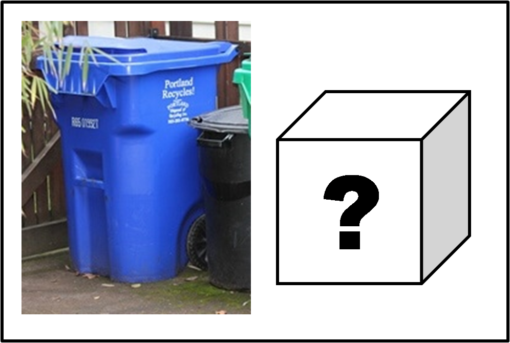

QUESTION TWO
What do I put in my bin or bucket that is separate from the blue bin?
AnswerWhat do I put in my bin or bucket that is separate from the blue bin?
AnswerImportant, never put glass in the blue recycling bin! It causes problems for the MRF!